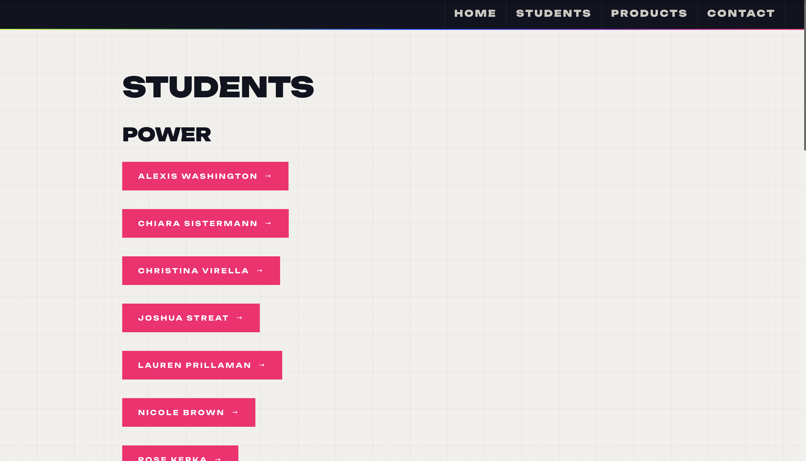
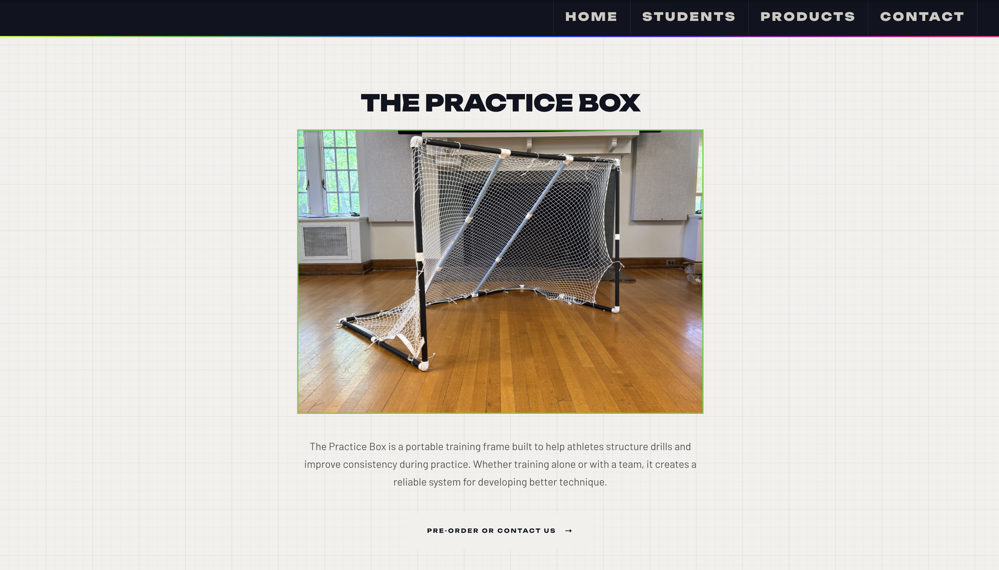
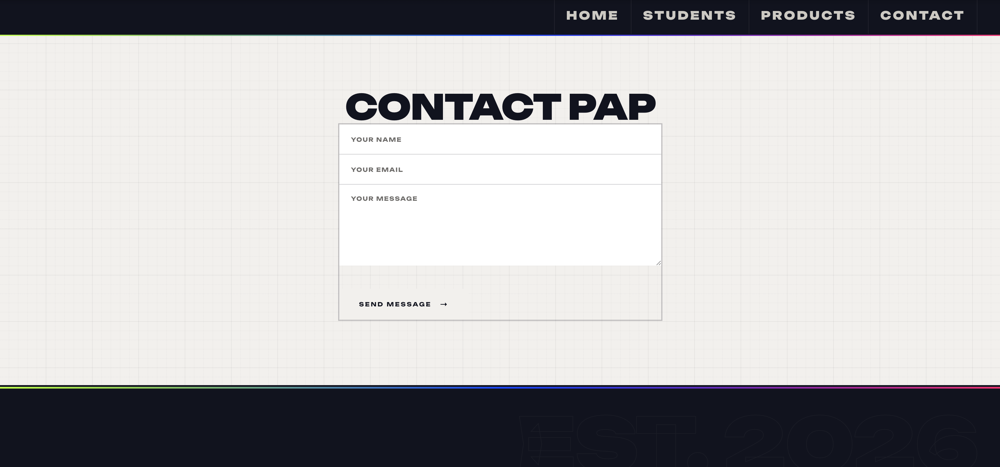

Drew Wells
Project Name: PAP Website (access)
This website is a culmination of everyone’s projects
to create an accessible way to view and learn more
about what each student did this semester. It also
shows the overall purpose of PAP and the thought behind
it. Part of my work this semester has been with the
Practice Box, which is included in the website with
multiple pages of information and pictures of the product.



